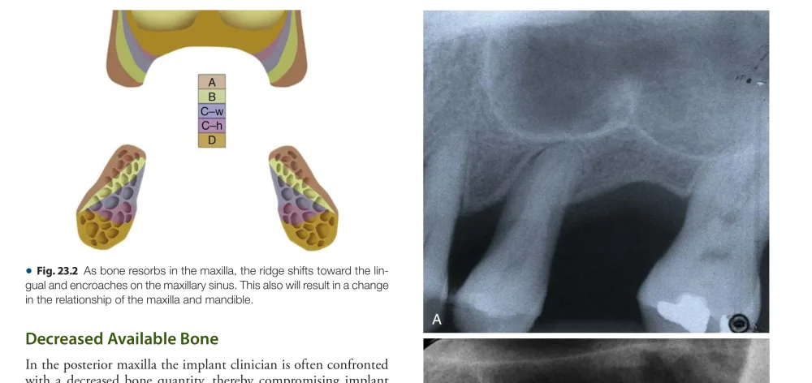
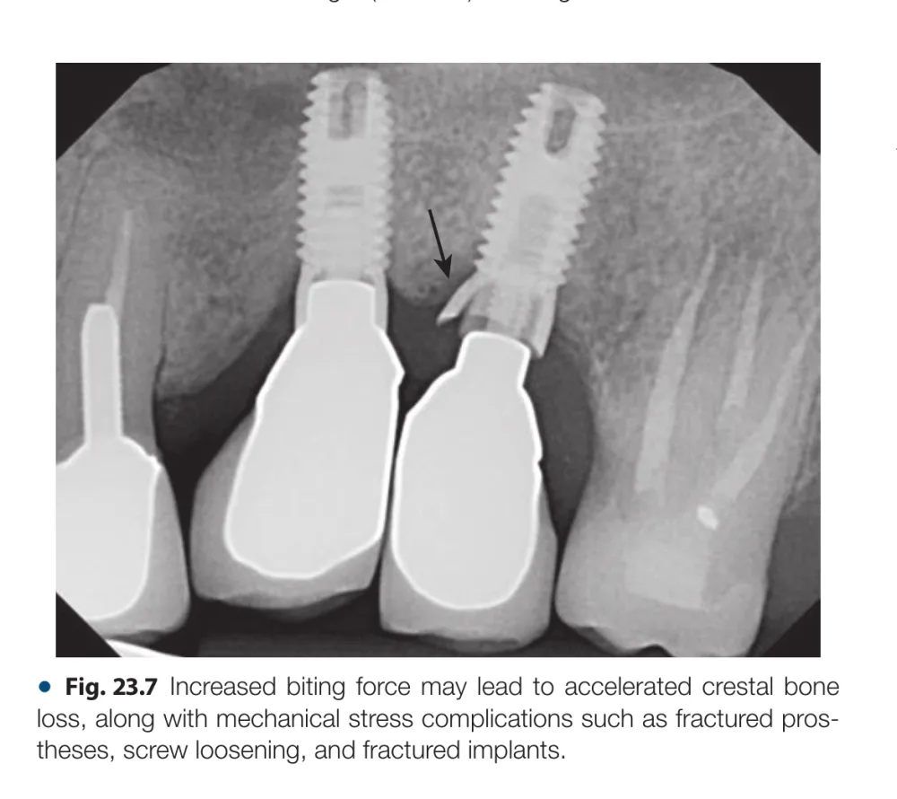

نسخه استخراجشده؛ ترجمه یا تأیید علمی انجام نشده است. وضعیت: captured
در یونیتهای پیش، ماگزیلای خلفی بارها بهعنوان بدترین ناحیه نام برده شد. این یونیت به آن اختصاص دارد — و نشان میدهد که دلیلش یک عامل نیست، بلکه شش عامل است که در یک نقطه جمع شدهاند.
عامل یکم — تراکم استخوان:
استخوان D4 معمولاً در ماگزیلای خلفی یافت میشود — و پیشتر دیدی که این نرمترین دسته است، با آنالوگ لمسی یونولیت و تقریباً بدون هیچ کورتیکال کرستالی.
و اعداد شیوعش را هم به یاد داری: D4 در ماگزیلای خلفی حدود ۴۰ درصد و پس از گرافت سینوس تقریباً دو سوم.
عامل دوم — جابهجایی ریج:
«با تحلیل استخوان در ماگزیلا، ریج به سمت لینگوال جابهجا میشود.»
و این یک پیامد بیومکانیکی مستقیم دارد. اگر ریج به سمت کام برود ولی دندان مقابل سر جایش بماند، ایمپلنت ناچار پالاتالتر از موقعیت اکلوزالی مطلوب قرار میگیرد — و همان بار آفست و کانتیلور باکالی را میسازد که در یونیت اکلوژن دیدی چقدر مخرب است.
عامل سوم — و این ویژهی همین ناحیه است:
پنوماتیزاسیون سینوس ماگزیلا — یعنی گسترش حفرهی سینوس به سمت پایین، به داخل فضایی که پیشتر ریشهی دندانها را در بر میگرفت.
پس ماگزیلای خلفی از دو سو فشرده میشود: از بالا سینوس پایین میآید، و از پایین کرست تحلیل میرود. ارتفاع در دسترس از هر دو سو کم میشود.
و همین باعث میشود نواحی خلفی ماگزیلا «سریعترین کاهش ارتفاع استخوان را در میان همهی نواحی داخلدهانی» داشته باشند.
عامل چهارم — فضای ارتفاع تاج:
وقتی ریج تحلیل میرود، فاصلهی کرست تا صفحهی اکلوزال بیشتر میشود — یعنی CHS افزایش مییابد.
و پیشتر دیدی که CHS یک کانتیلور عمودی است که هر بار جانبی یا کانتیلورشده را تشدید میکند.
حالا این چهار عامل را کنار هم بگذار و ببین چه اتفاقی میافتد:
استخوان ضعیفتر میشود (D4)، ارتفاع کمتر میشود (سینوس + تحلیل)، موقعیت ایمپلنت پالاتالتر میرود (جابهجایی ریج)، و اهرم بلندتر میشود (CHS).
هر چهار عامل در یک جهت کار میکنند — و هیچکدام دیگری را جبران نمیکند.
و یک نکتهی عملی هم هست: «اغلب دشوار است که فضای کافی برای جایگذاری ایمپلنت داشته باشیم.»

سه عامل دیگر باقی مانده — و این سه، وضعیت را از «دشوار» به «پرخطرترین» میبرند.
عامل پنجم — نیروی گاز:
«نیروی گاز افزایشیافته ممکن است به تحلیل تسریعشدهی استخوان کرستال بینجامد.»
و اعدادش: حداکثر نیروی گاز در ناحیهی قدامی حدود ۳۵ تا ۵۰ psi است و در ناحیهی مولر ۲۰۰ تا ۲۵۰ psi — و نیرو روی مولر دوم حدود ۱۰ درصد بیشتر از مولر اول است. پارافانکشن میتواند نیروی حاصل را تا سه برابر کند.
و این همان تناقضی است که پیشتر دیدی: «تراکم استخوان بیدندان با مقدار نیرویی که آن ناحیه در حالت طبیعی میگرفته، رابطهی معکوس دارد.»
یعنی بیشترین نیرو، در ضعیفترین استخوان.
عامل ششم — سطح ریشهای که باید جایگزین شود:
«سطوح ریشه در نواحی خلفی بهطور چشمگیری بیشتر از قدامی است.»
و عددش: «بیشترین افزایش سطح دندان طبیعی در ناحیهی مولر رخ میدهد، با افزایش ۲۰۰ درصدی در مقایسه با پرمولرها.»
پس طبیعت در این ناحیه سه برابر سطح ساخته بود — و حالا باید آن را با ایمپلنتهایی جایگزین کنی که در ضعیفترین و کمارتفاعترین استخوان دهان قرار میگیرند.
و اکنون دادهای که این بحث را به یک قاعدهی عملی تبدیل میکند:
نخست یک اصل: «چون استرسها عمدتاً در ناحیهی کرستال رخ میدهند، طراحیهای بیومکانیکی ایمپلنت برای به حداقل رساندن اثرات مضرشان باید به کار گرفته شود. قطر ایمپلنت روش مؤثری برای افزایش سطح در ناحیهی کرستال و مقابله با نیروهاست.»
و سپس یک توصیه: «بهطور ایدهآل، ایمپلنتهای دیویژن B در ماگزیلای خلفی به کار نمیروند.»
و اکنون شاهد آن — یک مطالعهی گذشتهنگر ۱۲ ساله:
«یک مطالعهی گذشتهنگر ۱۲ ساله روی ۶۵۳ گرافت سینوس انجامشده توسط میش، ۱۴ شکست ایمپلنت را آشکار کرد. هشت شکست از ۱۴ شکست، ناشی از شکست ایمپلنت در ناحیهی گردن ایمپلنتهای با قطر کوچکتر بود.»
به این نسبت خوب نگاه کن: هشت از چهارده — یعنی بیش از نیمی از همهی شکستها، از یک علت واحد: قطر کم.
و توصیهای که مستقیماً از آن برمیآید: «بنابراین ایمپلنتهایی با قطر دستکم ۵ میلیمتر پیشنهاد میشوند، یا چند ایمپلنت ۴ میلیمتری اسپلینتشده در ناحیهی مولر.»
دو راه، یک هدف — و هر دو را از یونیتهای پیش میشناسی: افزایش قطر، یا افزایش شمار بههمراه اسپلینت.
و یک تغییر مفهومی که ارزش دانستن دارد — چون یک باور قدیمی را اصلاح میکند:
«در طول سالها، مفهوم طول ایمپلنت برای موفقیت بلندمدت اهمیت کمتری پیدا کرده است. چون بیشتر نیرو تنها به ناحیهی میانیـکرستال ایمپلنت منتقل میشود، تأکید کمتری بر نیاز به ایمپلنتهای بلندتر گذاشته میشود.»
و این با آنچه پیشتر آموختی میخواند — ترتیب اثربخشی ابزارها شمار ← عرض و طراحی ← طول است.
ولی یک استثنای مهم هست که نباید از قلم بیفتد:
«بهطور کلی، هرچه کیفیت استخوان بهتر، طول ایمپلنت کماهمیتتر. با این حال، با کیفیت ضعیفتر استخوان، یا نواحی گرافت گسترده، طول بیشتر سطح را افزایش میدهد و فیکساسیون اولیه یا ثبات اولیهی بهتری فراهم میکند.»
پس در ماگزیلای خلفی — که هم D4 است و هم اغلب گرافتشده — طول دوباره اهمیت پیدا میکند. اینجا قاعدهی عمومی وارونه میشود.
و عامل هفتم که مختص این ناحیه است و در هیچ جای دیگری وجود ندارد:
سینوس ماگزیلا در میان سینوسهای پارانازال بیشترین بروز پاتولوژی را دارد — در ۳۰ تا ۴۰ درصد بیماران بیعلامت نوعی پاتولوژی (التهاب، کیست، موکوسل، رینوسینوزیت، عفونت قارچی و…) دیده میشود.
این نکته را جدی بگیر. در هر ناحیهی دیگر دهان، تو با استخوان و بافت نرم سروکار داری. اینجا یک حفرهی هوایی با آستر مخاطی و زهکشی فیزیولوژیک در کار است — و آن حفره میتواند بیمار باشد.
و همانطور که در درس چهارم خواهی دید، وجود پاتولوژی سینوس یکی از اندیکاسیونهای SA-4 است — یعنی بهتنهایی میتواند طرح درمان را از «ایمپلنت همزمان» به «گرافت و تأخیر» تغییر دهد.
و یک یافتهی آناتومیک که یک راه فرار را میبندد:
در گذشته این پرسش مطرح بود که آیا میتوان ایمپلنت را کنار سینوس، در سمت داخلی (مدیال) آن گذاشت و از کل مسئله عبور کرد.
پاسخ را دادهها میدهند: در ۲۵ اسکن توموگرافی کامپیوتری متوالی از ماگزیلا، استخوان کافی برای پشتیبانی ایمپلنت در سمت مدیال سینوس یافت نشد.
و نتیجه: «بنابراین چنین به نظر میرسد که اگر استخوان کافی مدیال به سینوس وجود داشته باشد، یک استثنای نادر است.»
پس دور زدن سینوس از سمت مدیال تقریباً هیچگاه ممکن نیست. باید یا با استخوان کمِ زیر آن کار کنی، یا آن را بالا ببری.
و یک دادهی تاریخی که مرز دیگری را نشان میدهد:
گزارشی قدیمی نشان داد که ایمپلنتها میتوانند بدون پیامد داخل سینوس قرار گیرند، بهشرط آنکه اینتگریشن میان ایمپلنت و استخوان زیر سینوس رخ دهد. ولی همان گزارش نرخ شکست بالاتری هم نشان داد — «نرخ موفقیت ۷۰ درصد برای ۵ تا ۱۰ سال».
هفتاد درصد. این را با نرخ بیش از ۹۵ درصدی مقایسه کن که برای گرافت سینوس گزارش شده (درس چهارم). پس بهجای فرو بردن ایمپلنت در سینوس، کف سینوس را بالا میبرند — موضوع سه درس بعدی.
